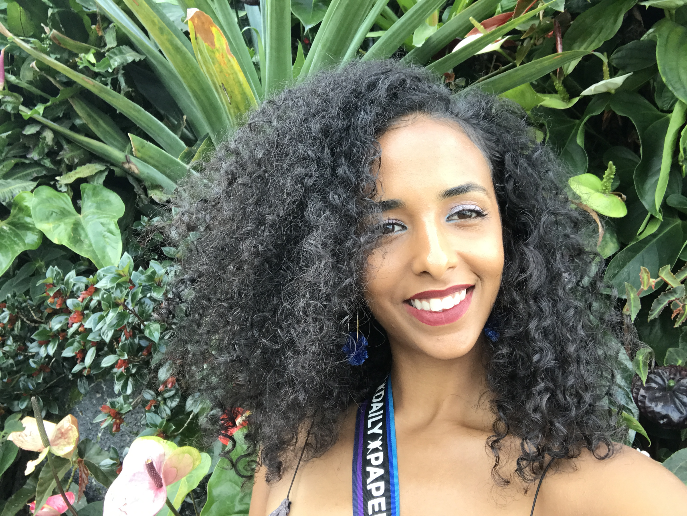

Here I am pictured at a waterfall in Bali, Indonesia.
Nice to meet you, I'm Lo!
Thank you for visting!!! I have always had dreams of creating a travel blog but to devlop one myself now that is BOSS! I have a deep passion to travel. Just having the oppourtinity to do so is a great blessing that I am always thankful for. I will share along here tips, guides and my journey into creating Island Meets City.
How it all started
I was born in Cabo Verde on a tiny island called Fogo. At only 3 months, my family moved to Boston, Massachussetts. I was raised in my Boston my entire life. Growing up in the inner city of Boston, Roxbury and Dorchester to be exact was challenging but, rewarding. It has created the perfect balance for me. To be able to apply my street smart skills to my everyday life has been a very important tool to have espically when I am traveling solo.
Why Island Meets City?
For me it represents Duality. I was born on an island but, the city has shaped me into the woman I am today. It means a organic lifestyle. To stay healthy and to always strive for the greater good and to make an impact! We are all storytellers. I want to share mine with you, to hopefully inspire to travel and most importanly to be of resource for your future adventures!
Fun facts!
Im an Aires sun, Pisces rising and Leo moon
I do photography for fun
In 2018-2019, I lived in South East Asia.
I LOVE to cook
I make candles for fun!
"My mission in life is not merely to survive, but to thrive; and to do so with some passion, some compassion, some humor, and some style."
- Maya Angelou